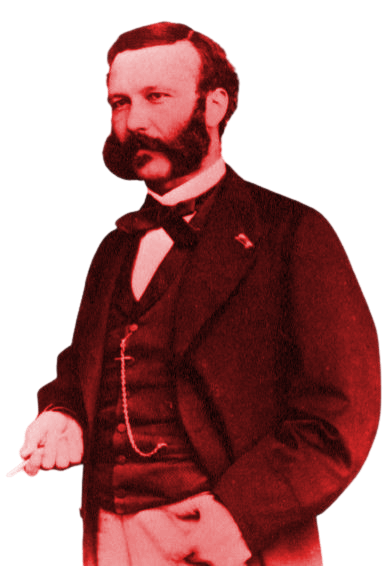
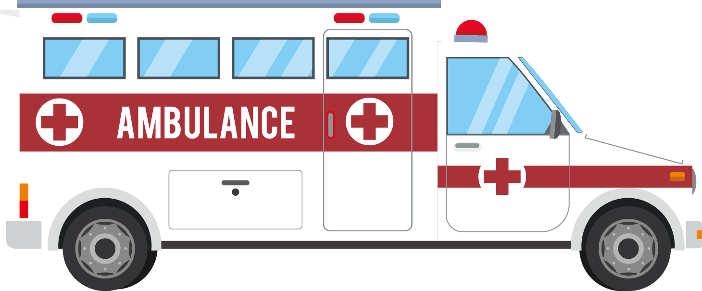

Palang Merah menjadi saksi dalam setiap perang bersenjata, bencana, konflik, dan situasi darurat lainnya. Mereka ada bersama para korban
Gerakan Palang Merah lahir di antara watak bengis manusia untuk angkat senjata dan berperang. Pada akhirnya menjadi jaringan kemanusiaan yang menjalar sedunia. Kini mereka ada di keadaan darurat, bencana, konflik, dan situasi kritis lainnya untuk memberikan bantuan.
Sebagai penghormatan, setiap 8 Mei, diperingati sebagai hari Palang Merah Sedunia atau yang kini bernama Palang Merah dan Bulan Sabit Merah (World Red Cross and Red Crescent Day). Tanggal tersebut diambil dari hari lahirnya Henry Dunant, seorang humanitarian asal Jenewa, Swiss.
Pada tahun 1859, Dunant menyaksikan penderitaan tentara yang terluka di medan perang dalam Pertempuran Solferino di Italia (perang kemerdekaan Italia ke-2). Pengalaman ini mendorongnya untuk menulis buku "A Memory of Solferino" yang menyerukan: pembentukan grup sukarelawan untuk membantu mereka yang terluka selama masa perang.

"(Mereka) saling menginjak-injak, membunuh satu sama lain di atas tumpukan mayat yang berdarah, menumbangkan musuh dengan popor senapan, meremukkan tengkorak, mengoyak perut dengan pedang dan bayonet."
"Tidak ada seperempat yang diberikan; itu adalah penjagalan belaka; pertarungan antara binatang buas, yang gila karena darah dan amarah."
"Bahkan yang terluka pun berjuang sampai nafas terakhir. Ketika mereka tidak punya senjata lagi, mereka mencengkeram leher musuhnya dan mencabik-cabiknya dengan giginya."
1
/
3
[Henry Dunant dalam A Memory of Solferino]
Kesaksian tragis dan ide-ide Henry Dunant menginisiasi berdirinya Komite Internasional untuk Pertolongan Orang (Comité international de la Croix Rouge) pada 1863. Mereka menjadi pihak yang netral serta independen dalam perang. Misinya membantu orang-orang yang terdampak konflik dan kekerasan bersenjata. Basis gerakan lembaga bantuan sukarela ini perlahan tumbuh di semua negara.

Gerakan itu mendorong perjanjian multilateral pertama berkaitan Palang Merah. Dalam konferensi diplomatik pada 22 Agustus 1864 tercetus konvensi Jenewa dengan prinsip utama:
Memberikan bantuan kepada yang terluka tanpa membedakan kewarganegaraan.
Netralitas (tidak dapat diganggu gugat) personel medis dan lembaga serta unit medis.
Tanda khas palang merah dengan latar belakang putih melindungi semua layanan medis.